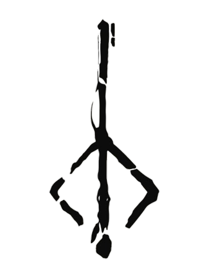

The First Instruments
A collaborative animation project combining visual storytelling, scene creation, and editing.
My contributions: I edited half of the scenes in Alight Motion.
View the project →Jakerooni · A hunter's journal
Every hunter has a story. This is mine.
01 / WELCOME, GOOD HUNTER
I'm Jake, a BSEMC student exploring animation, visual storytelling, and game development.
From a moonlit village to a moving character, I enjoy bringing ideas to life and learning something new with every project.
Explore my works →02 / FEATURED PROJECT
A collaborative animation project combining visual storytelling, scene creation, and editing.
My contributions: I edited half of the scenes in Alight Motion.
View the project →
01 / THE HUNTER
Name: Jake Benedick B. Murillo
Course: BSEMC
Hover or use Tab to uncover more.
I am a curious student who enjoys learning new skills, being creative, and turning ideas into something meaningful.
Like a hunter exploring Yharnam, I approach challenges with patience and determination.
02 / PASTIMES
Gaming, music, and creative projects.
Hover or use Tab to uncover more.
03 / THE PATH AHEAD
I want to become a game developer and create immersive worlds and memorable experiences. While protecting the city.
Hover or use Tab to uncover more.
03 / THE HUNTER'S TOOLKIT
04 / THE JOURNEY SO FAR
Experimenting with effects, flight, and movement through GIF exercises.
Contributing scene artwork and editing to a group animation.
Building this Bloodborne-inspired portfolio and publishing it with Netlify.